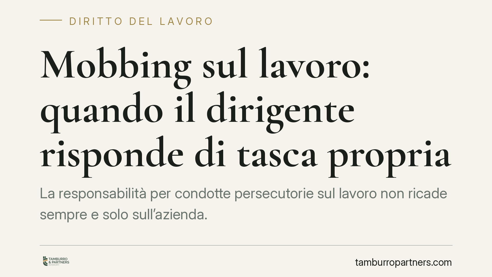

Mobbing sul lavoro: quando il dirigente risponde di tasca propria
La responsabilità per condotte persecutorie sul lavoro non ricade sempre e solo sull'azienda. Un recente orientamento della Cassazione torna sul punto: il dirigente che agisce con intento persecutorio individuale può rispondere in prima persona dei danni. Il tema tocca da vicino datori, preposti e dipendenti, con effetti economici e reputazionali rilevanti su chi conduce la condotta.

Il caso e perché conta
La questione è ricorrente nel contenzioso del lavoro: un dipendente lamenta condotte vessatorie protratte nel tempo e chiede il risarcimento del danno. La domanda pratica è chi paga. L'azienda, il singolo dirigente che ha materialmente posto in essere la condotta, oppure entrambi?
Un recente orientamento della Corte di Cassazione affronta proprio questo profilo, distinguendo la posizione del datore di lavoro da quella del dirigente che agisce con un intento persecutorio individuale. La distinzione non è teorica: incide sulla concreta possibilità del lavoratore di ottenere il risarcimento e sull'esposizione patrimoniale del singolo preposto.
> Nota metodologica: il riferimento numerico alla pronuncia non è stato confermato in modo autonomo. Prima di qualsiasi utilizzo in giudizio è indispensabile verificarne numero, anno e sezione presso le fonti ufficiali.
Inquadramento normativo
La norma cardine resta l'art. 2087 c.c., che impone al datore di lavoro di adottare le misure necessarie a tutelare l'integrità fisica e la personalità morale dei lavoratori. Da qui deriva una responsabilità di natura contrattuale: in caso di danno, l'onere probatorio pende in misura significativa sul datore, che deve dimostrare di aver adottato tutte le cautele esigibili.
È bene precisare che «mobbing» e «straining» non sono categorie normative espresse, ma nozioni elaborate dalla giurisprudenza. Il mobbing presuppone una condotta sistematica e reiterata, con finalità persecutoria. Lo straining, invece, si caratterizza per una situazione di stress forzato con effetti duraturi sul lavoratore, senza necessariamente quel carattere sistematico e continuativo tipico del mobbing.
Sulla natura della responsabilità personale del dirigente occorre cautela. Il tema è discusso: parte della giurisprudenza e della dottrina la ricostruisce in chiave aquiliana (art. 2043 c.c.), come illecito del singolo che ha posto in essere la condotta; altre impostazioni la inquadrano in termini contrattuali o da contatto sociale, valorizzando la posizione del preposto all'interno dell'organizzazione. Presentare una sola ricostruzione come pacifica sarebbe una semplificazione.
Implicazioni pratiche
Il punto operativo è che la responsabilità dell'azienda e quella del dirigente non si escludono automaticamente e possono coesistere. Sul versante datoriale, la prova liberatoria di aver vigilato adeguatamente è rigorosa e non automatica: la sola esistenza di protocolli formali non basta se, in concreto, l'organizzazione ha tollerato o non intercettato la condotta. L'art. 2087 c.c. mantiene un onere probatorio in capo al datore.
Per il dirigente, il rischio è l'esposizione patrimoniale diretta quando la condotta persecutoria sia riconducibile a una sua iniziativa individuale, estranea alle direttive aziendali. In questi casi il risarcimento può gravare sul suo patrimonio personale.
Per il lavoratore, la possibilità di agire anche nei confronti del singolo amplia le prospettive di tutela, ma impone maggiore precisione nella ricostruzione dei fatti: occorre documentare condotte, tempistiche ed effetti sulla salute.
Cosa fare in concreto
Per l'azienda:
- Verificare l'effettività dei modelli organizzativi e dei canali di segnalazione, oltre alla loro esistenza formale.
- Documentare gli interventi adottati a fronte di segnalazioni, così da poter assolvere l'onere probatorio ex art. 2087 c.c.
Per il dirigente:
- Distinguere sempre le scelte gestionali legittime dalle condotte personali; conservare traccia delle direttive ricevute e dei criteri applicati.
Per il lavoratore:
- Raccogliere per tempo elementi documentali (comunicazioni, ordini di servizio, certificazioni mediche) che ricostruiscano la sistematicità o lo stress forzato subito.
- Valutare con un professionista la corretta qualificazione della fattispecie prima di avviare l'azione, individuando i soggetti da convenire.
È opportuno affrontare per tempo questi profili, prima che la situazione si consolidi in un contenzioso.
Disclaimer
Contributo informativo a cura di Tamburro & Partners - Avv. Giuseppe Tamburro. Non costituisce parere legale.
Ogni storia di lavoro ha i suoi tempi.
Se gestisci HR e vuoi un confronto su contenzioso, ispezioni o licenziamenti, scrivi allo studio. Ti rispondiamo entro un giorno lavorativo.